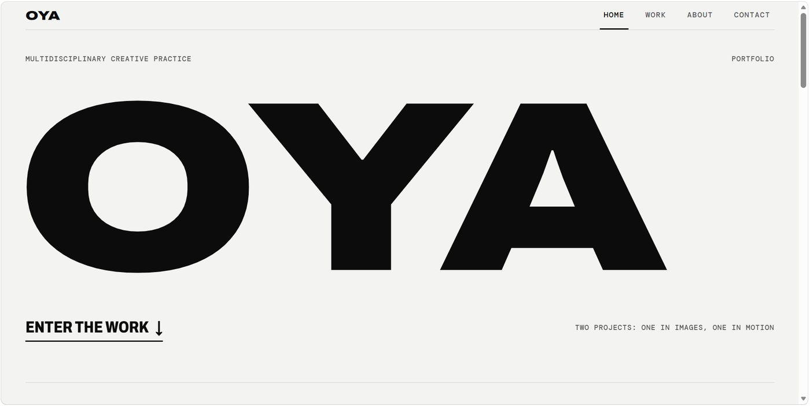

Computer Science, 100 Level, MIVA Open University
Obi Chidera Azuka
Computer Science StudentAspiring Software Engineer
Profile photo not added yet
Save it as assets/images/profile.jpg and it appears here.
I write HTML, CSS, JavaScript and basic Rust, and I am drawn to systems programming, problem-solving and building technically demanding software. Rust first, then blockchain, then zero-knowledge.
01 Where things stand
- Learning
- Rust fundamentals, and what actually happens underneath HTML, CSS and JavaScript for COS 106.
- Building
- This site and its planner, and OYA Creative, my creative portfolio, which is already live. The projects page only lists real work.
- Heading
- Rust developer, then blockchain engineering, with zero-knowledge as the longer-term target. Quantitative trading is a side interest I want to understand better.
02 Featured work
OYA Creative
A multidisciplinary creative portfolio, live now. It shows two projects: a 10-photograph promotional collection for N2P (nth2prove) and a 37-second skate video.

03 Academic Planner
Planner right now
The tool I use to balance university work against independent engineering, with deadlines, time logs and a workload split I can adjust.
Open the plannerLoading the planner snapshot needs JavaScript.